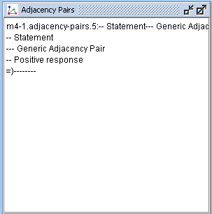

The Adjacency Pairs Area (Figure 1) displays the annotated adjacency pairs. For each adjacency pair in the corpus the unique identification, the type of the source dialogue act, the type of the AP and the type of the target dialogue act are displayed.

Figure 1: Adjacency Pairs Area